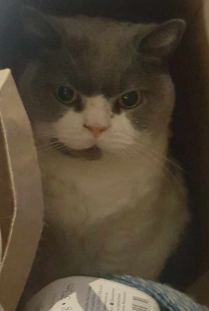

My Cat Percilla.

This is a photo of my adorable cat Percilla, I love her very much.
Youtube video of my cat
Email Ty to do his work!
More About Percilla
- Despite her cute appearance, she is a very mean cat, she frequently scratches me and yells at me, which makes me very sad :(
- When she wants more water she also yells at me or my mother :(
- Whenever it's her dinner time, she will sit at her food bowl and stare at the closest human until she is fed, she just sits there, and glares at us :(
Percilla's favorite rooms
- I honestly don't know what to call this one, we call it the "middle room" she has a little basket in there and she sleeps in it a lot, I have to assume it's her favorite room, it's definitely her favorite sleeping spot at least.
- Mum's bedroom, she likes moms bed a lot, this is definitely her second favorite sleeping spot
- The kitchen. While she doesn't like the kitchen that much (floor isn't comfy) her water, food, and litter are around there. and I have to assume she has a practical appreciation for the kitchen.
- The living room, she likes sleeping on the couches. One of the couch cushions is actually a little droopy from her sleeping on it so persistently over the years. Given how much she sleeps here you might be wondering why it doesn't rank higher. The reason is I think she views it as a sort of "default spot" or maybe a "hub" it's like she stays there and contemplates which room she actually wants to sleep in, often while already sleeping.
Percilla Extra Facts!
| Name |
Age |
Favorite Food |
| Percilla |
??? |
Mince |